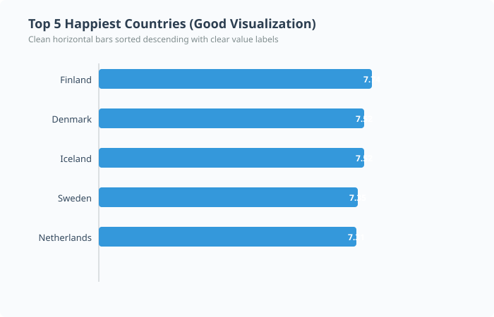
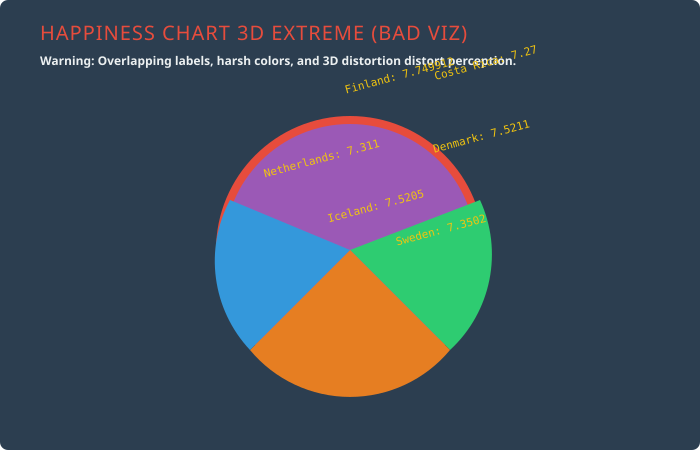

Assignment 3:
World Happiness Report
Good vs. Bad Visualization Critique
Data Source: World Population Review — Happiest Countries in the World
1. Good Data Visualization: Top 5 Happiest Countries

Description & Approach:
This visualization presents the top 5 happiest countries using a clean, horizontal bar chart format. My approach focused on maximizing clarity and the data-to-ink ratio. By utilizing horizontal bars, country names align naturally with left-to-right reading habits, eliminating the need to tilt text or crowd labels.
The values are sorted in strict descending order from top to bottom, making immediate comparisons effortless. A neutral, unified color palette (#3498db) avoids unnecessary distractions, ensuring the viewer's attention stays entirely on the underlying scores.
2. Bad Data Visualization: Distorted & Cluttered Representation

Description & Approach:
This visualization intentionally breaks core data visualization principles to mimic a poor design. My approach here was to combine a dark, heavy background with aggressive 3D perspective slices, harsh neon color palettes, and haphazardly rotated, overlapping text labels.
This creates extreme visual clutter and cognitive overload, making it virtually impossible for a reader to accurately judge relative scores or extract quick insights.
3. Critical Reflection: The Power and Danger of Misleading Visuals
It is remarkably easy to mislead people using data visualizations because human brains are hardwired to process visual proportions, shapes, and colors almost instantaneously—often bypassing rigorous analytical scrutiny. When designers manipulate baseline axes, use misleading 3D perspectives, or overload charts with distracting visual elements, viewers are primed to accept distorted narratives as objective truth. Because data charts carry an inherent aura of scientific authority, people rarely question the underlying presentation choices.
To avoid being misled, readers should cultivate a critical eye by actively looking for truncation, missing axis labels, unverified data sources, and unnecessary decorative fluff that obscures true values. Always ask yourself whether the visual structure serves to clarify the data or manipulate your emotional reaction. By checking scales, demanding raw context, and questioning dramatic visual contrasts, you can protect yourself against analytical deception.